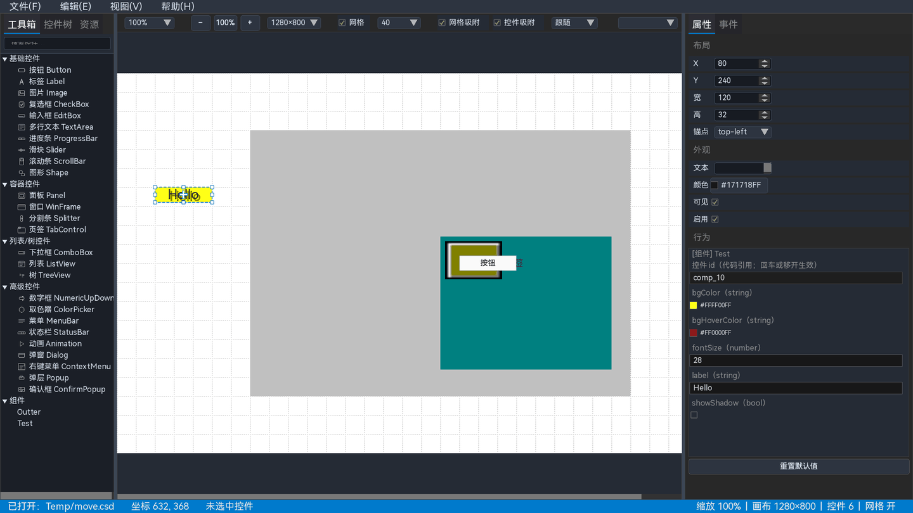

10 属性面板
右侧属性面板编辑当前选中控件的属性。动态表单按属性语义分为背景色、边框色、字体及阴影、轮廓阴影、常规五组；布局、外观、行为是使用上的分类，字段会归入对应组。普通控件的属性以树形分组呈现：组标题可折叠，字段行右侧是编辑控件，编辑列保持对齐。事件单独放在“事件”页签。

10.1 未选中控件时
未选中控件时，属性面板显示画布（Bench）属性：画布 ID、窗口标题、缩放模式、背景色等。这些属性对应运行时的 viewport 配置。
10.2 属性分组
| 分组 | 包含内容 |
|---|---|
| 背景色 | 控件背景的 normal/hover/pressed/disabled 色槽、背景相关开关 |
| 边框色 | 边框四态颜色、边框可见性等 |
| 字体及阴影 | 文本、字体、字号、文字色、文字阴影及偏移；text-shadow.blur 为 Label 字形柔光半径 |
| 轮廓阴影 | 控件外框的 box-shadow：normal 的颜色/偏移/柔光/扩散，以及 hover/pressed/disabled 状态子组 |
| 常规 | 控件 ID、布局位置/尺寸/锚点、可见/启用、控件专有行为和结构化字段 |
分组标题默认折叠，点击标题左侧的三角箭头展开/收起；展开后字段行左侧为属性名、右侧为编辑控件，编辑列始终对齐。动态行区域统一使用 18 号字（与分组标题一致），窄面板下标签列宽自适应，同时为编辑控件保留可用宽度。Shape 多图元的每个图元、Button/CheckBox 的“内嵌文本”等也以可折叠子节点呈现。切换控件时同一类型会复用已展开/收起状态。分组内没有的字段通常表示该控件类型不支持，或字段属于组件实例 props。
10.3 布局
| 字段 | 说明 |
|---|---|
| X / Y | 控件相对父容器的位置 |
| 宽 / 高 | 控件尺寸 |
| 锚点 | 控件相对父容器的锚定方式，例如 top-left |
数值输入支持直接键入和上下微调。修改后立即写回画布；连续修改同一字段会在撤销栈中合并。
10.4 外观与颜色
| 字段 | 说明 |
|---|---|
| 文本 | Label/Button 等控件的显示文本 |
| 颜色 | 控件的主要颜色；打开取色器选择或输入颜色值 |
| 可见 | 控件是否参与显示和命中 |
| 启用 | 控件是否响应交互 |
颜色使用 #RRGGBBAA 格式；支持直接输入十六进制色值。取色器可以拾取屏幕颜色，也可以在右侧输入 RGBA 数值。
Label 的“字体及阴影”组还提供 text-shadow.blur（字形柔光半径）。当数值大于 0 而文字阴影尚未启用或阴影色透明时，设计器会自动启用文字阴影并补一个默认阴影色，避免“只改 blur 看不到效果”。
10.4.1 轮廓阴影（box-shadow）
“轮廓阴影”组用于编辑控件外框的柔光阴影：normal 显示 5 个字段；hover / pressed / disabled 是三个默认折叠的子组，每个子组同样有颜色、偏移、柔光和扩散 5 行。
- 状态行显示的是生效值：状态字段未设置时回退到 normal，便于直接看到继承结果。
- 编辑状态字段后，该字段写入状态覆盖；没有改动的字段继续继承 normal。
- 状态颜色的 alpha=0 表示该状态明确关闭阴影；不要用“留空”表达关闭。
- 修改状态数值时，如果颜色仍透明且没有显式状态色，设计器会补一个可见的默认阴影色，避免“改了数值但看不见”。

主题中的写法和状态规则见 主题声明：阴影。支持范围：普通控件、Popup/Dialog、MenuBar 支持四态；MenuPanel 支持 normal；ContextMenu/MenuItem/HandleControl 不绘制 box-shadow。Shape 的 box-shadow V1 按包围盒绘制，不沿轮廓发光。
10.5 行为与控件专有属性
“行为”区域根据控件类型和 schema 显示不同字段，例如：
- 控件 ID（代码引用）
- Panel 的
clip-children（是否裁剪超出容器 rect 的子控件） - 字体名称、字号
- 可拖动、可放置、可重排
- 选中状态、方向、进度、范围等控件专有属性
字段来源是 UICornerstone schema；当 schema 更新时，属性面板会提供新的可用属性。未知字段会保留在原始 JSON 中，不会因为面板暂不支持而丢失。
Shape 的属性行会按当前“图形类型”过滤：只生成该类型真正生效的字段（例如 radius 仅 round-rect、ring-width 仅 circle/ellipse、points 仅 polyline/polygon）。切换图形类型后属性行会自动重建，下拉框下方同时显示当前类型的生效属性提示。Shape 的 clip（默认 true）控制单图元/多图元是否裁剪到控件 rect；clip=false 保留旧溢出行为。Shape 还提供“多图元”分组：通过“＋ 添加图元”逐个添加图形，每个图元有独立的形状、矩形、颜色、线宽等字段控件；每个图元标题右侧提供“上移 / 下移 / 删除”。图元列表按 前 → 后 显示（最上面是前景、最下面是背景）：上移为前移一层，下移为后移一层。引擎按 primitives 数组顺序绘制（数组中靠后的图元覆盖靠前的），面板显示顺序与数组顺序相反。primitives 非空时替代顶层单图元绘制，属性面板同时隐藏顶层的图形类型/填充/描边/线宽/半径/环宽/点集等单图元字段，只保留“图元列表”；清空全部图元后自动恢复。详见 媒体控件：Shape。
Button / CheckBox 的“内嵌文本”组由 schema 的 x-embedded-control 注解生成：展开后可编辑内嵌 caption Label 的 alignment、line-height、line-spacing-ratio、shadow.blur。caption、字体、颜色、阴影启用/偏移仍由宿主行负责，避免重复；内嵌组默认折叠，展开时才解析目标 Label 的字段。
10.6 多选编辑
- 选中多个控件后，固定区显示选择集包围盒的位置和尺寸。
- 动态区只显示所有选中控件共有的属性；修改会批量写入。
- 值不一致时字段显示为空或提示，输入新值后统一覆盖。
- 多选属性修改同样进入撤销栈。
10.7 组件实例属性
选中组件实例时，行为区域显示组件声明过的 props：字符串、数字、布尔、颜色。修改后实例立即更新，模板不变。
- 字符串/数字/布尔 prop 可直接在表单中编辑。
- 颜色 prop 使用取色器或十六进制输入。
- 模板中的
{{prop}}占位符会被实例值替换。
更完整的组件说明见 组件系统。
10.8 重置与滚动
- “重置默认值”只重置当前选中控件的属性，不是删除控件。
- 属性条目较多时，面板内容区可滚动；滚动时不改变选择。
- 面板宽度可以通过左侧分隔条调整。
10.9 属性没有生效？
- 确认选中的是目标控件，而不是它的父容器。
- 查看该属性是否被项目主题规则覆盖；显式属性优先，但主题可能改变其他未显式设置的通道。
- 对组件实例，确认属性是实例 prop 还是模板内部控件的属性。
- 如果字段被禁用，通常表示该控件类型不支持此属性，或当前处于组件编辑/预览状态。